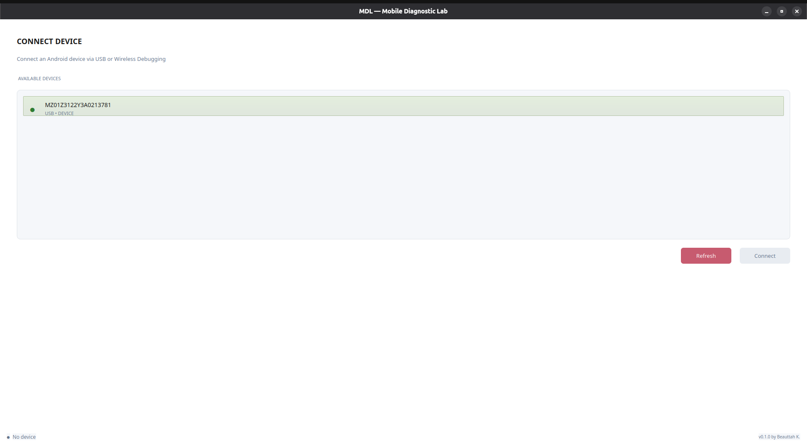
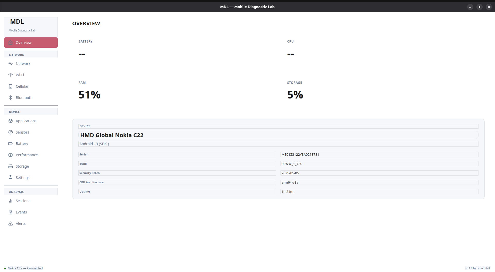

Device info
Hardware, OS, build and property details at a glance.
MDL connects over USB or Wireless Debugging, collects live telemetry in the background, and turns it into a real-time desktop dashboard — battery, network, performance, apps, sensors and more.
Free and open source · Built with Rust + Tauri · Windows, macOS and Linux
Inspect a connected device live, or browse and replay saved sessions offline — no ADB connection required.
Hardware, OS, build and property details at a glance.
Charge level, health, doze state and wake locks.
CPU, memory, thermal zones and per-app usage.
Wi-Fi, cellular, Bluetooth and live network checks.
Installed packages, notifications and foreground tasks.
Capture sessions and replay or export them as CSV/JSON.


Installers are taken from the latest GitHub release. If none are published yet, use the source build below.
git clone https://github.com/kiprutobeauttah/MDL.git && npm install && npm run tauri dev
Loading releases…
You need Rust 1.77+, Node.js 18+ and ADB on your PATH. On Linux, Tauri also needs the WebKitGTK and GTK development packages.
adb devices shows it.# verify ADB
adb devices
# run the app
npm install
npm run tauri dev